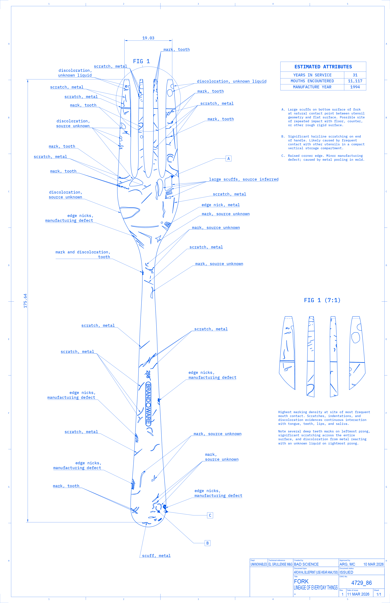

fork [lineage of everyday things]
2026
Fork [Lineage of Everyday Things] is a millimeter-precise technical drawing of a single used fork from our neighborhood taqueria.
The piece uses the practice of science——as a ritual of attention and rigorous detail——to investigate something as mundane as the restaurant utensil. We invite viewers to consider the depth of memory and information within everyday objects, as they collect permanent markings through their encounters with tens of thousands of people (mouths) in their lifetimes. What would it take to remember——or recreate——such a memoryful, used object?
EXHIBITIONS
ALLOTROPE, STANFORD SCHOOL OF ENGINEERING
HASSO PLATTNER INSTITUTE OF DESIGN, STANFORD UNIVERSITY